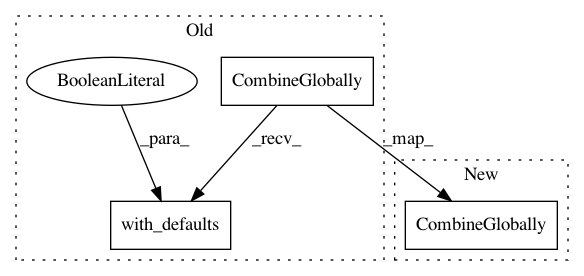

4f7a3dc4e71574bbae5ddf089a6b12fa6c076404,tensorflow_transform/beam/analyzer_impls.py,_MergeAccumulatorsCombineImpl,expand,#_MergeAccumulatorsCombineImpl#Any#,1098
Before Change
return (
pcoll
| "MergeCombinesGlobally" >> beam.CombineGlobally(
_CombinerWrapper(
self._combiner,
self._tf_config,
// TODO(b/34792459): Don"t set with_defaults. We set it to False
// for all combiners (even though QuantilesCombiner doesn"t need
// it to be set) as after combiner packing we will have a single
// combiner and want a consistent behavior.
is_combining_accumulators=True)).with_defaults(False))
@common.register_ptransform(analyzer_nodes.CacheableCombinePerKeyAccumulate)
After Change
return (
pcoll
| "MergeCombinesGlobally" >> beam.CombineGlobally(
_CombinerWrapper(
self._combiner,
self._tf_config,
is_combining_accumulators=True)))
@common.register_ptransform(analyzer_nodes.CacheableCombinePerKeyAccumulate)
In pattern: SUPERPATTERN
Frequency: 3
Non-data size: 3
Instances
Project Name: tensorflow/transform
Commit Name: 4f7a3dc4e71574bbae5ddf089a6b12fa6c076404
Time: 2020-07-10
Author: iindyk@google.com
File Name: tensorflow_transform/beam/analyzer_impls.py
Class Name: _MergeAccumulatorsCombineImpl
Method Name: expand
Project Name: tensorflow/transform
Commit Name: 4f7a3dc4e71574bbae5ddf089a6b12fa6c076404
Time: 2020-07-10
Author: iindyk@google.com
File Name: tensorflow_transform/beam/analyzer_impls.py
Class Name: _MergeAccumulatorsPackedCombineImpl
Method Name: expand
Project Name: tensorflow/transform
Commit Name: 4f7a3dc4e71574bbae5ddf089a6b12fa6c076404
Time: 2020-07-10
Author: iindyk@google.com
File Name: tensorflow_transform/beam/analyzer_impls.py
Class Name: _IntermediateAccumulateCombineImpl
Method Name: expand